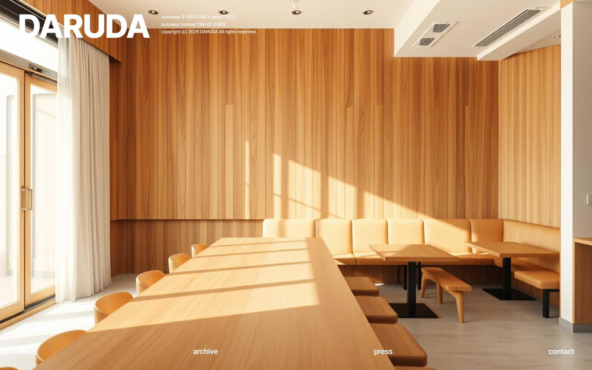
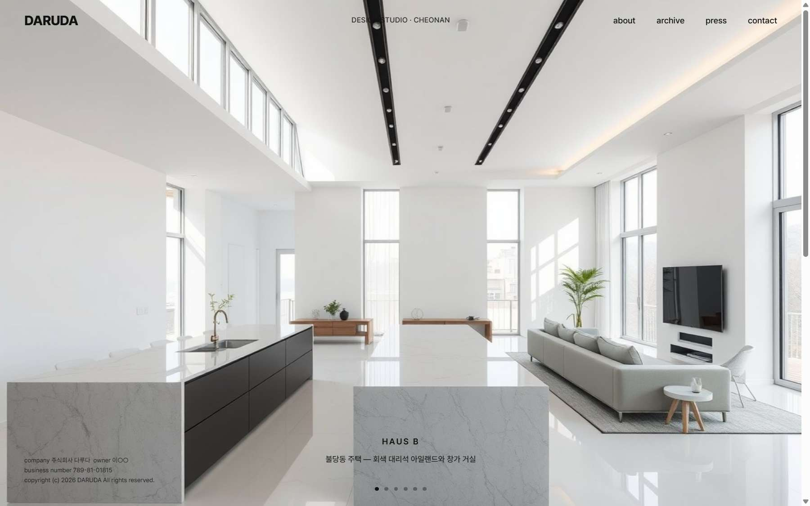
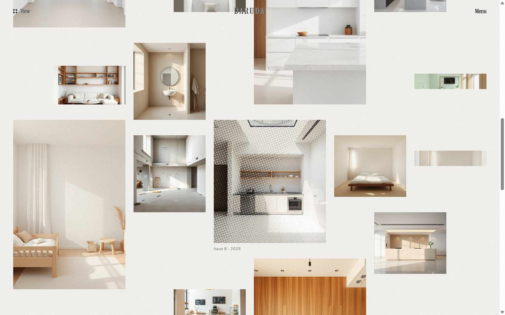

의뢰 기획 이미지의 구성을 그대로 옮긴 시안. 사진 위 한 줄 텍스트, 하단 소문자 메뉴, about·press·contact 오버레이, archive만 페이지 이동. stof·salad-bowl 레퍼런스의 디자인 시스템 적용.

이용자가 헤매지 않는 일반적 구성. 상단 바 메뉴, 풀이미지 캡션 슬라이드, 미색 필터 그리드 archive, stof식 프로젝트 상세, 매거진 스프레드 뷰어(PDF·스캔본).

hollywoodexhibit2026.com 분석을 바탕으로 three.js로 재구현. 스파이럴 인트로, 거대 마스트헤드, 흩어진 그리드 + 하프톤 포인터 리빌, 종이 접힘 전환, 타이포 벽 메뉴, 칩 필터. 스크롤 디테일(첫 2컷 축소·기울임·블러 진입) 반영.